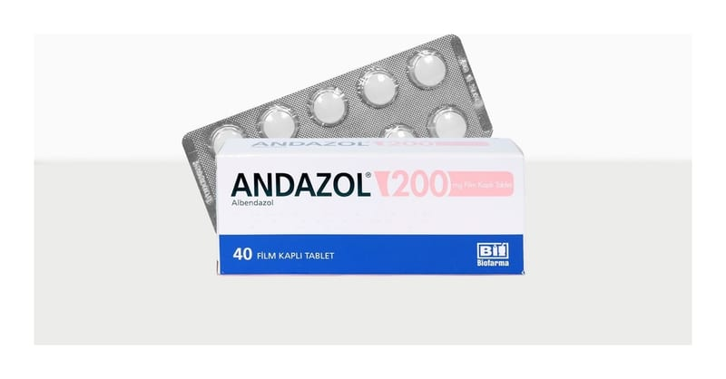

Andazol 200 mg Film Kaplı Tablet, 40 Adet

Ne için kullanılır
KT · Bölüm 1ANDAZOL®200 mg albendazol içeren, 2, 6 ve 40 tabletlik blister ambalajda sunulan film kaplı tablettir. Tablet içerisinde sığır sütünden elde edilen laktoz monohidrat bulunmaktadır. Film kaplı tabletler beyaz renkli, bikonveks ve yuvarlaktır. ANDAZOL®antihelmintik bir ilaçtır. Yumurtadan yeni çıkmış böcek larvalarının vücutta gelişmesini veya çoğalmasını önler. ANDAZOL®domuz tenyası ve köpek tenyası gibi bağırsak kurtlarının neden olduğu belirli enfeksiyonların tedavisinde kullanılır. Bu ilacı kullanmaya başlamadan önce bu KULLANMA TALİMATINI dikkatlice okuyunuz, çünkü sizin için önemli bilgiler içermektedir.
Bu kullanma talimatını saklayınız. Daha sonra tekrar okumaya ihtiyaç duyabilirsiniz. Eğer ilave sorularınız olursa, lütfen doktorunuza veya eczacınıza danışınız. Bu ilaç kişisel olarak sizin için reçete edilmiştir, başkalarına vermeyiniz. Bu ilacın kullanımı sırasında, doktora veya hastaneye gittiğinizde doktorunuza bu ilacı kullandığınızı söyleyiniz. Bu talimatta yazılanlara aynen uyunuz. İlaç hakkında size önerilen dozun dışında yüksek veya düşük doz kullanmayınız.
ANDAZOL®, diğer helmint enfeksiyonlarında da kullanılabilir.